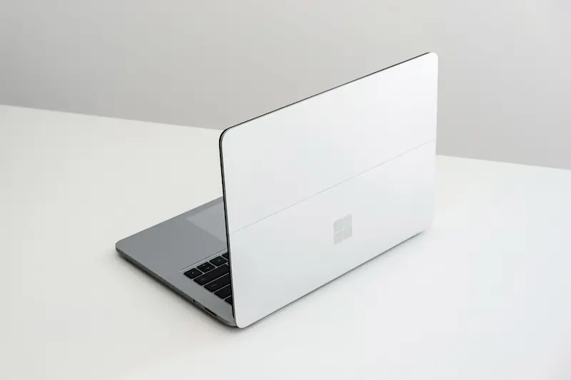

Computere
Et site om computeren med alt fra dens historie til dens specifikationer og mine personlige præferencer, når det gælder computere og computerudstyr.

Stats
Ni ud af ti familier ejer i 2022 en eller flere smartphones, mens knap seks ud af ti familier har en tablet-pc liggende. Hele 94 procent ejer en personlig computer, hvoraf fire ud af ti anvender Windows som deres primære operativsystem.
- Personlige computer
- 94%
- Windows
- 40%
- Tablet
- 56%
- Smartphone
- 93%
